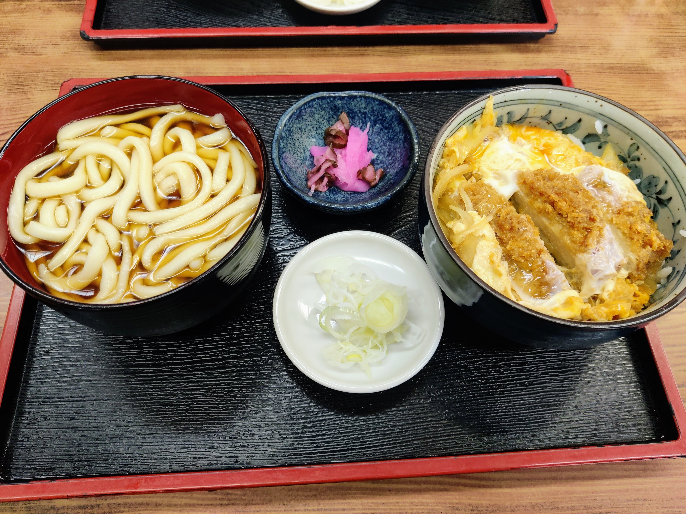
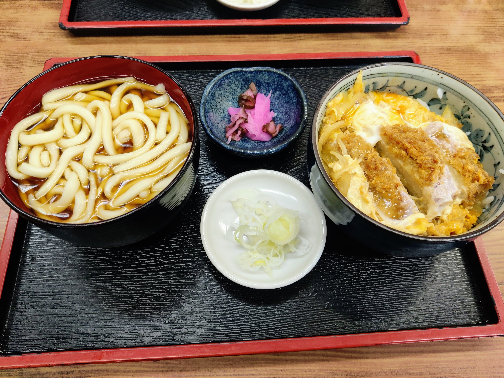

家で働く
Wednesday, 08 February 2023今日は家で働っていた。家でほとんど働かないけど、できるのは今週が最後だ。今週の週末妻は日本に来るので、これから彼女は家の机を使う。
天気はよかったから、アリさんと一緒に代々木公園で走った。そして、近くの蕎麦屋に食べに行った。僕はうどんとカツ丼食べて、随分美味しかった。もう一度戻る。
明日は事務所で働く。家で働くのが素敵だけど、同僚に会うのが好きだ。
これは私達の机 🐙🍜🍺

これは今日の昼ご飯 🤤🤤🤤

今日は家で働っていた。家でほとんど働かないけど、できるのは今週が最後だ。今週の週末妻は日本に来るので、これから彼女は家の机を使う。
天気はよかったから、アリさんと一緒に代々木公園で走った。そして、近くの蕎麦屋に食べに行った。僕はうどんとカツ丼食べて、随分美味しかった。もう一度戻る。
明日は事務所で働く。家で働くのが素敵だけど、同僚に会うのが好きだ。
これは私達の机 🐙🍜🍺
これは今日の昼ご飯 🤤🤤🤤

私の目標について話そう。特に、日本語学習について話そう。
七月前に東京に来た、今まで日本語の授業があっている。私は多い習ったと思うけど、めっちゃもっと習いたい。
日本語でマンガや、アニメや、小説が楽しみたい。
例えば、2023年終わり前”魔女の宅急便”を読めたら、凄く嬉しいだ。これは今年の目標だと思う。
頑張る。

これは日本語で初めて書く。毎日少し日本語を書きみたい。
今は午後8時53分だ。今日は長い月曜日だった。
朝は日本語の授業で始まった。よかった、今日は頭が遅すぎなかった。仕事について、何もおもしおい起こた。それはいいニュース。
ただし、仕事の後ジムで悪い物が起きた。結婚指輪は殆ど無くした。のを脱いで、床で置いて、忘れた。うちに変えった時、気がついた。凄く運がいかった、ジェスさんと洋子さんは手伝った。洋子さんはジムにいって、のを見つけた。
今は午後9時35分だ。日本語の書きのが、めっちゃ遅いだ。😅
おやすみなさい。

Date: 2021-02-04
2020 has gone by very fast, and I've somehow just remembered I had a blog! I haven't done anything particularly remarkable in 2020, but here's a summary of what I've been up to.
The year started well, like every year ever, with my birthday. I didn't know it at the time, but this would be the last party with friends in a very long time!


February came, and a couple of cool things happened:


With March, the first lockdown came. Prior to this time, I would have worked from home once a week. Changing to doing it every day had its challenges at the beginning, but I think that we all got used to it fairly quickly.


Lockdown didn't only bring continuous WFH, it also brought a bunch of other great things:


By August lockdown was over, and we were able to meet with some people again, so we organised a couple of small barbeques, and we got to use our recently refurbished garden furniture.


Before Summer was over, we managed to escape London for a few days to visit our family in Poland.


In October, it was time to visit Spain, which was the highlight of Autumn. Luckily we managed to spend 10 days over there, which were very needed. We ate as much as we could, and I remember it took me weeks until I was back at my pre-Spain trip running speed.


When we arrived in London, our 15-day quarantine overlapped with the beginning of a new lockdown, that lasted until the beginning of December. I honestly don't remember anything from November, but December was the month when we received a couple of amazing Christmas packages from our families in Poland and Spain :)


On the last day of 2020, we went to Hampstead Heath for a long walk.

Bonus picture of our Christmas tree, which at the time of writing this, is still up (we like it too much).

That was 2020. All things considered, we had a pretty good 2020. We both got to keep our jobs and keep busy for the entire year. We and our friends and families have been healthy, so there's nothing we can complain about. Let's hope 2021 will be better though.
Date: 2019-11-18
Last weekend I've been visiting Cologne and there happened to be an art exhibition about Moebius in a town nearby (just joking, this was no accident).
Moebius was Jean Giraud's artist name, who was born in France in 1938 and passed away on 2012. If you like European comic, you have probably heard of him, but if you haven't, he's mainly known for: - Blueberry, in my opinion the best western ever made. - Metal Hurlant / Heavy Metal magazine, where he started most of his sci-fi work. - The Incal, a sci-fi series written by A. Jodorowsky. - A lot of collaborations and design work for the movie industry, to mention a few names: The Fifth Element, Tron, Alien, Jodorowsky's Dune (which unfortunately never happened, but his designs inspired other movies).
Here are some of the best pictures I took at the exhibition.


Page 5 of 10